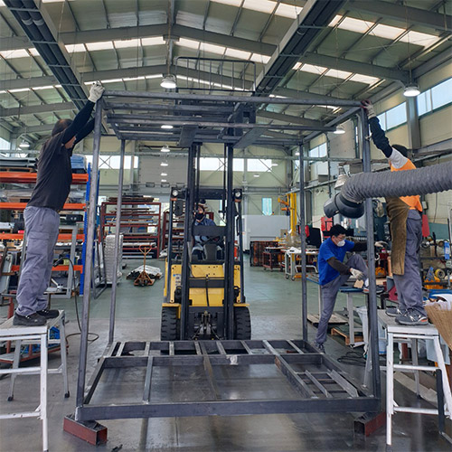

회사현황
주요거래처
주요 매출처
㈜일신바이오베이스
127-81-64875
경기도 동두천시 삼육사로 548번길 (상패동)동결건조기, 초저온냉동고, 혈액냉장고, 시약냉장고, 제빙기
생산제품
동결건조기
왁진, 항생물질, 효소, 호르몬의 의약품과 동식물의 실험용sample, 식용식품등의 실험건조를 비롯하여 모든 수분함유 물질 동결건조


초저온냉동고 (FD120)

초저온냉동고

소형 초저온냉동고

초저온냉동고(FD80)

대형 프레임 제작

저온 냉동고는 강력한 냉각 시스템을 통해 영하 -40도 부터 -85도 까지 급속으로 빠르게 냉각됩니다.